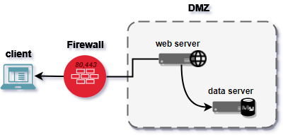
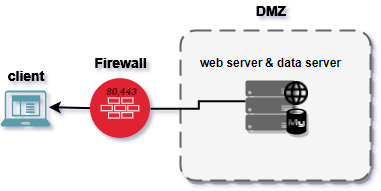
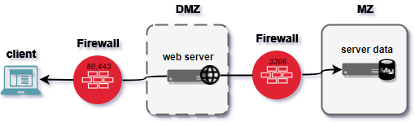
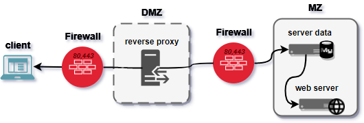

Environnement réseau¶
Important¶
La base de donné est un élement critique et sensible d'un architecture pour ces 2 raisons:
- Il n'est pas conçu pour se protéger efficacement des attaques
- il contient des données, c'est à dire la seule information pérenne dans notre architecture
C'est pour cela qu'il faut l'isoler au maximum :
à ne pas faire¶

à ne pas faire non plus¶

bien de faire¶

meilleur chose à faire¶
